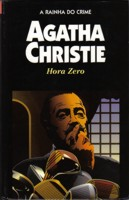

Hora Zero
Towards Zero
A aristocrata Lady Tressilan é brutalmente assassinada em sua casa. Pouco tempo depois, Mr. Trevis, um experiente advogado criminalista de 80 anos, também é morto quando estava prestes a revelar uma pista sobre o crime. O superintendente Battle, da Scotland Yard, entra em ação e descobre que está diante de um perverso assassino. Seguindo cinco pistas aparentemente desconexas, o superintendente Battle inicia uma perigosa investigação para descobrir a identidade do criminoso.